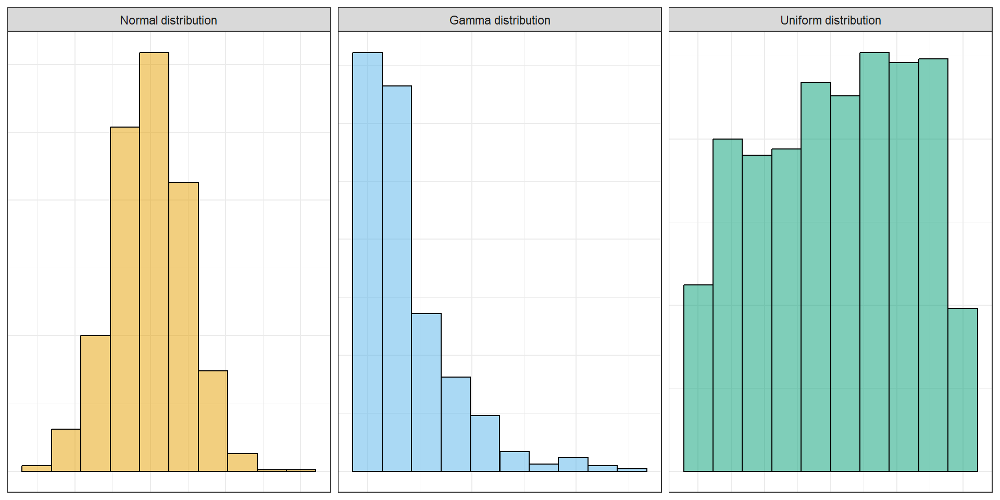
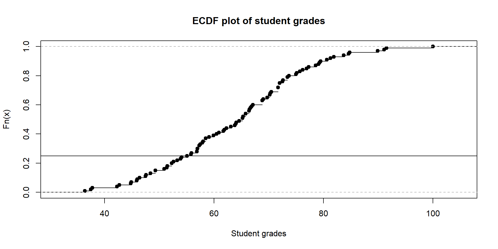
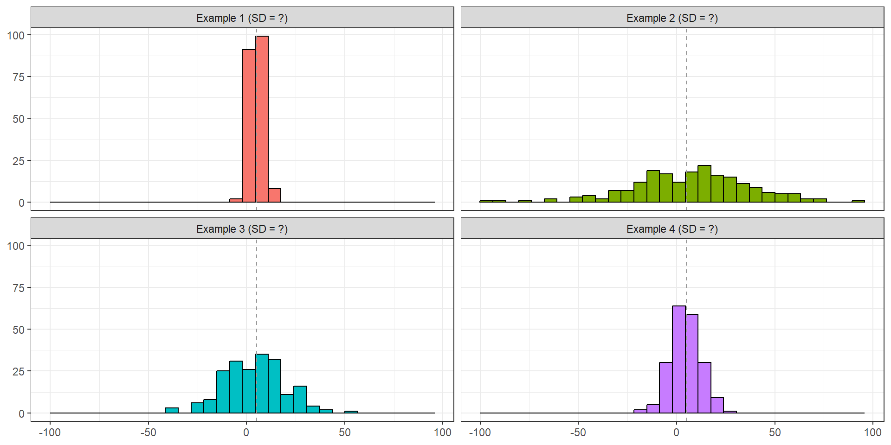

Numerical data
ST201 - Data analysis
Cormac Monaghan
Department of Mathematics and Statistics, Maynooth University
Recap
Last week, we covered:
- Categorical and numerical variables.
- Subtypes of categorical and numerical variables.
- Ways to represent these types of variables.
Check in: Was there anything that was confusing or not clear from last week?
Numerical data
This week, we’re going to talk a little bit more about numerical data.
We’ll be answering three questions
Where is the data?
- Mean · Median · Quantiles
How much does the data vary?
- Range · IQR · Variance · Standard deviation
How are two variables related?
- Scatterplots · Correlation
Numerical data
We’ll be working with the same dataset as last week.
Numerical data
We’ll be working with the same dataset as last week.
Numerical data
We’ll be working with the same dataset as last week.
The distribution of grades
A distribution describes how the values of a variable are spread out.
- Where values tend to be
- How spread out they are
- Whether there are unusual values
- Whether the distribution is symmetric or skewed

The mean
The mean gives us a measure of the centre of a distribution.
\[
\bar{x} = \frac{1}{n}\sum^n_{i = 1}x_i
\]
More simply: add all the values and divide by the number of values.
\[
60 + 70 + 80 = 210 \\[8pt]
210 / 3 = 70
\]
If the total grade points were shared equally among students, everyone would have a grade of 70.
Mean deception
Imagine we had two groups of students:
- Group A: \(40, 50, 60, 70, 80, 90, 100\)
- Group B: \(65, 67, 68, 70, 72, 73, 75\)
What can you tell me about these groups?
Both groups have a mean of 70
The mean tells us about the centre - but not the spread of data (we’ll come back to this)
Quantiles
- Quantiles are a generalisation of the idea of the median
- A quantile tells us where a particular proportion of the observations fall.
- 25th percentile: 25% of observations are at or below this value.
- 50th percentile: 50% of observations are at or below this value (median).
- 75th percentile: 75% of observations are at or below this value.
quantile(student_data$grade)
## 0% 25% 50% 75% 100%
## 36.400 55.625 65.200 72.125 100.000
Quantiles
Let’s look at this on the ECDF plot.

Quantiles
Let’s look at this on the ECDF plot.
Quantiles
Let’s look at this on the ECDF plot.
The spread of the data
- Group A: \(40, 50, 60, 70, 80, 90, 100\)
- Group B: \(65, 67, 68, 70, 72, 73, 75\)
Both groups have a mean of 70
But Group A has much more variability
How do we measure the spread of data?
The range
The range describes the distance between the smallest and largest values.
\[
\text{Range} = \text{max}(x) - \text{min}(x)
\]
range(student_data$grade)
## [1] 36.4 100.0
Interquartile range (IQR)
The IQR describes the spread of the middle 50% of observations.
\[
\text{IQR} = Q_3 - Q_1
\]
Variance
We can also measure the spread of data using variance
\[
s^2 = \frac{1}{n - 1} \sum^n_{i=1}(x_i - \bar{x})^2
\]
- Take each observation’s distance from the mean.
- Square the difference.
- Take an average of all the differences
We can take the square root of this variance and we’re left the standard deviation
How far away is the data from the mean
Exercise: Standard deviation
All the below examples have a mean of 5 - which have the following standard deviations
SD = 3; SD = 8; SD = 15; SD = 30

Scatter plots
In all our previous examples, we’ve been looking at a single numerical variable. But what if we are interesting in two numerical variables
Does studying for longer relate to higher grades?
Wrapping up
- Means and medians describe the center of the data
- Quantiles tell you the position of data
- Range, IQR, variance, and SD tell you the spread of data
- Histograms and boxplots can show the distribution of data
- Scatter plots can show relationships between two variables
- We’ll learn more about this later in the semester